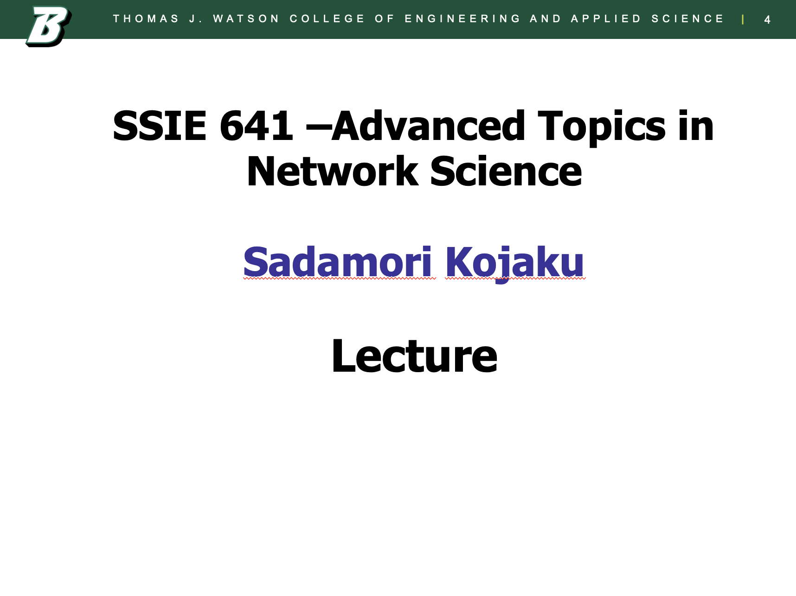

Advanced Topics in Network Science
Check list - [ ] Microphone turned on - [ ] Zoom room open - [ ] Sound Volume on - [ ] Open Discord - [ ] Quiz
1 Advanced Topics in Network Science
Lecture 02: Small World Networks Sadamori Kojaku


2 Small World Networks 🌎🔗
What we’ll learn: - 🧪 Small-world experiments - 📠Network distance concepts - 💾 Efficient network data handling - 🔬 Measuring node distances
3 Milgram’s Small World Experiment 📬
- 📤 Packets sent to random people in Nebraska & Kansas
- 🯠Goal: Reach target person in Boston
- 📊 Results: ~6 people to reach target (64/160 successful)
- 🌠“Six degrees of separation†coined later

4 Modern Small World Confirmations 📱
- 📧 Yahoo email experiment: ~4-7 steps (2009)
- 👥 Facebook study: 4.74 avg. path length (2012)
5 Wikirace Game 🏁
- 🕹️ Navigate Wikipedia from start to end page
- 🔗 Find shortest path through hyperlinks
- 👀 Experience “small world†phenomenon firsthand

https://wiki-race.com/
6 Why is the world small?
- 📠Explore “6 degrees of separation†concept
- 🤔 Understand small world network properties
- 🖊️ Practice network analysis without computer
https://skojaku.github.io/adv-net-sci/m02-small-world/pen-and-paper.html
7 Handling Large Networks
8 Tools for Network Analysis 🛠️

9 networkx vs igraph 🤔
networkx: Beginner-friendly libraryigraph: Mature library. Originally an R package.networkxis great! But there are persistent bugs in some algorithms.igraphis a more reliable and faithful implementation of algorithms.
Other Python package
graph-tool: A rich library for stochastic block modelingpytorch-geometric: A library for deep learning on graphsscipy: Provides efficient functions for sparse matrices
GUI tools
10 Efficient Network Representation 💾
- 🧮 Challenge: Storing large adjacency matrices
- 💡 Solution: Compressed Sparse Row (CSR) format
- 📊 Stores only non-zero entries
- 🚀 Memory efficient for sparse networks

11 Walk, Trail, Path, Circuit, Cycle

12 Walk, Trail, Path, Circuit, Cycle
- 🚶 Walk: Sequence of connected nodes
- 🛤️ Trail: Walk with no repeated edges
- 🛣️ Path: Walk with no repeated nodes
- 🔄 Loop, Circuit, Cycle: Special closed walks
13 Connectedness in Networks
- 🔗 Connected vs Disconnected networks
- 🧩 Connected components
- 🌟 Giant component

14 Directed Network Connectedness 🔀
- 💪 Strongly connected: Path between all node pairs
- 🤠Weakly connected: Path ignoring edge direction

15 Hands-on: Network Analysis with igraph 🛠️
- 📊 Create and visualize graphs
- 🔠Find shortest paths
- 🧩 Identify connected components
- 🔀 Analyze directed networks
https://skojaku.github.io/adv-net-sci/m02-small-world/connectedness-hands-on.html
16 Assignment: Small World Experiment 📝
- 🔬 Compute average path length in scientist network
- 💻 Use efficient CSR format
- 🧮 Apply igraph for network analysis
https://skojaku.github.io/adv-net-sci/m02-small-world/assignment.html